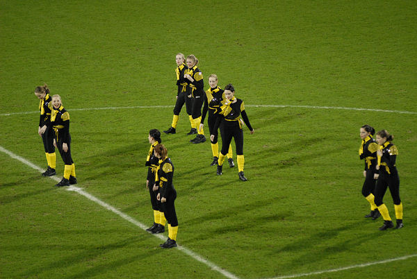
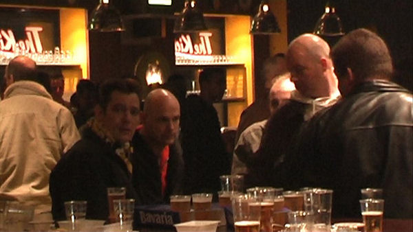

Voor de wedstrijd wordt het publiek nog eens verblijd met de Kirchröadsjer
Meedsjer.
De NAC-supporters onthaalden hun team op een vlaggenparade.
Prins carnaval en zijn adjudant vormen een gemakkelijk scorend duo.
Misschien iets voor Roda?
In de beginfase zijn er enkele goede kansen voor Roda JC.
Matondo ziet hoe Lamah juist naast doel schiet.
Hadouir... ook net niet.
Ten Rouwelaar heeft geen gebrek aan werk.
Hadouir ontdoet zich van zijn man en geeft een voorzet op Matondo. Matondo
wordt vervolgens binnen
het strafschopgebied omvergetrokken door Mtiliga.
De scheidsrechter fluit niet. Lamah rent naar de bal om alsnog te scoren
maar...
...wordt onderuit gehaald door Ten Rouwelaar. Scheidsrechter Haverkort ziet
twee overtredingen binnen
de zestien door de vingers. Ongelooflijk!
Haverkort maakt het nog bonter: een buitenspeldoelpunt van Sikora wordt
goedgekeurd: 0-1, (38').
Na het rustsignaal gaan Koopman en Atteveld verhaal halen bij de arbitrage.
Roda ploetert door totdat...
... totdat het nieuwe goudhaantje van NAC, Idabdelhay, 0-2 scoort, (68').
Het was ook nog eens behoorlijk frisjes in het stadion.
Zwaanswijk voorkomt de aansluitingstreffer van Roda.
Fopduik van Loran waarna de bal bij Saeijs belandt.
Deze lepelt de bal perfect over de doelman maar het doelpunt wordt
afgekeurd.
Deze jongste Kickoff-bezoekster kan na de derde opeenvolgende nederlaag nog
lachen.

Veel bier en weinig mensen. De Kickoff stroomde snel leeg.
Zolang de tap loopt valt het allemaal wel mee...
Saeijs redelijk innig met EVDW van rodajcfans.nl
Treebeek ruilt voetbalplaatjes met Janssen.
Met Tyton, de derde aanwezige Rodaspeler in de Kickoff, krikten we ons Pools
idioom op.
Dit meisje is, net als Roda, het spoor volledig bijster.
Een aantal foto's in bovenstaand verslag zijn afkomstig
van Foto Frans. Hiervoor
dank!